Kingdom Animalia is comprised of multicellular, eukaryotic, and heterotrophic organisms. Meaning creatures that have more than one cell, have nuclei in their cells, and cannot create their own food. Most members of this kingdom are motile and can ingest/digest food.
These are the organisms that are typically refered to as "Animals". However, this is a very broad category, so these creatures are also seperated by several more types of criteria. The first criteria for seperating Animals is, are they Vertebrates or Invertebrates?
Vertebrates: Have a Spinal Cord
Invertebrates: Do not have a Spinal Cord
Invertebrate fossils include many different types of animals including sponges like the Astraeospongia, corals like the Archimedes, Arthropods such as Trilobites, Molluscs such as Worthenia, and Echinoderms such as Asteroidea.
Vertebrate Fossils include most of the creatures that people immediatley think of when they hear the word animal. However, vertebrates cover a broad enough range to warrent even further division. So for simplicities sake, these will be divided into Marine organisms, Dinosaurs, Birds, Synapsids, and Mammals.
Marine organisms include all creatures of the Superclass Osteichthyes (bony fish), amphibians such as the Diplocaulus, and some reptiles such as the Plesiosaurs.
Dinosaurs are once again divided into two categories Saurischia (Lizard-hipped) including the Tyrannosaurus and Ornithischia (Bird-Hipped) including the Stegosaurus.
Birds include creatures such as the Archaeopteryx and Titanis.
Synapsids are mammal like reptiles such as the Dimetrodon.
Finally, Mammals include organisms such as the Equus, Homosapiens, and Mammoths.
Invertebrates:
Astraeospongia (Calcareous Sponges): Also known as Basket Sponges due to their bowl like shape, comprised of calcium carbonate and lived in marine enviornmentss from the Silurian period (443.7 million years ago) to the Devonian period (419.2 million years ago). Only the sponges exoskeletons (called Spicules) were fossilized.
Archimedes: A coral that naturally grew in the shape of an Archimedes Screw. It lived from the Carboniferous period (345.3 million years ago) to the Permian period (268 million years ago). The Archimedes was a sedentary (non-moving) filter feeder that lived in shallow marine waters.
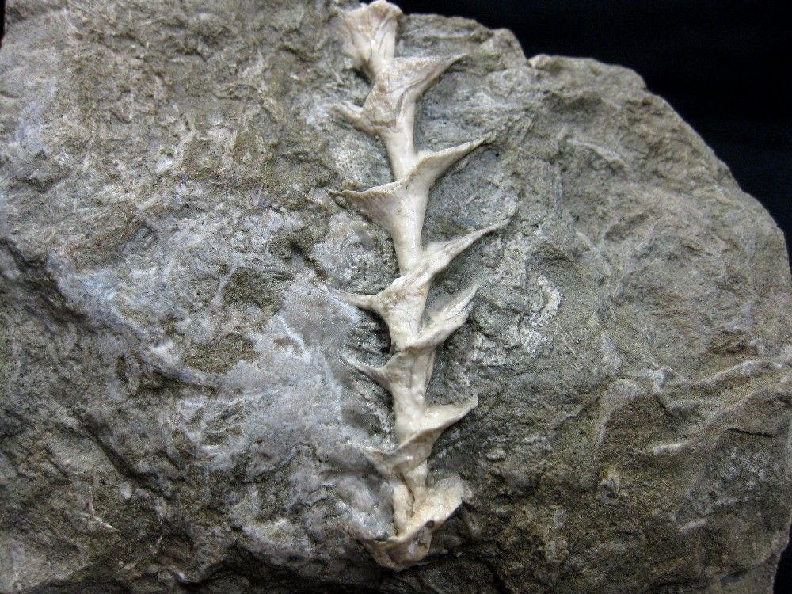
Trilobites: Trilobites are a class of Arthropods that spand a wide array of Genuses, however some of their major characteristics are that they were the first arthropods to appear in the fossil record, and they are named after the fact they can be easily divided into three sections. Trilobites were widespread during the Cambrian period (541 million years ago) but went exting during the mass extinction at the end of the Permian period (250 million years ago). They were all marine organisms, and they started out in shallow waters but moved into deeper waters over time.
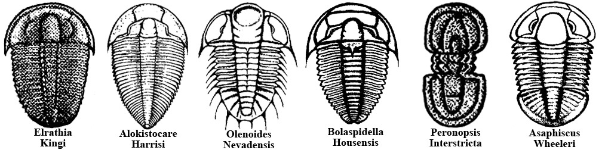
Worthenia: The fossils of an extict type of sea snail. Only their shells were able to be fossilized. Lived from the Devonian period (416 million years ago) to the Triassic period (200 million years ago) on the centrals coasts of North America. They were known for their small "Turban-shaped" shell.
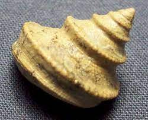
Asteroidea (Star Fish): Star shaped marine invertebrates found all throughout the world. Lived from the Ordovician period (485.4 million years ago) to the present day. Typically live in colonies and have tube like feet that operated using a hydraulic system and a mouth at the center of their underside.
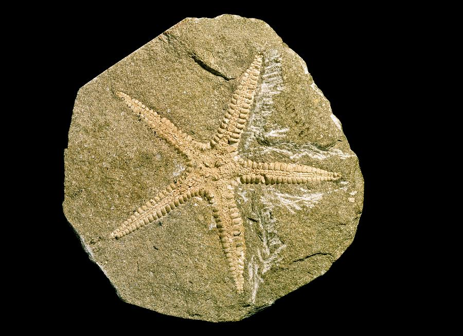
Marine Vertebrates:
Osteichthyes (bony fish): A class of fish consisting of 28,000 species, connected by the fact they have bones instead of cartilage. The oldest known fossils of bony fish are from the Silurian period (420 million years ago). These were also a transitional fossil, demonstrating teeth that were somewhere between fish and sharks.
Diplocaulus (double caul): An extint genus of amphibians from the Permian period (250 million years ago) in North America. Its most distinctive features were two long protrusions, called cauls, on the sides of its head, giving it an oddly boomerang shaped skull. The Duplocaulus was relatively large, reaching lengths of about 3.3 ft, but due to its small limbs and short tail, it is presumed to have swum with an up-and-down movement pattern similar to a dolphin.
Plesiosaurs: Plesiosaurs fist appeared in the late Triassic period (205 million years ago), and became especially common during the Jurassic period (201.3 million years ago), until their their disappearence during the Cretaceous-Paleogene extinction (66 million years ago). Plesiosaurs had a worldwide oceanic distribution. They had a long neck, a broad flat body, a short tail, and four long flippers. Plesiosuars breathed air and bore live young; there are even indications that they were warm blooded. Pleasiosaurs were among the first fossil reptiles ever discovered.
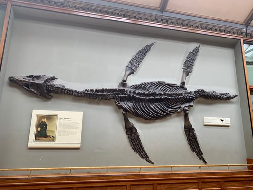
Dinosaurs:
Tyrannosaurus (Tyrant Lizard): A large, Saurischian (Lizard-Hipped), dinosaur found through out North America during the Maastrichtian age of the Cretaceous period (67 to 66 million years ago). Saurischia simply refers to the hip structure that all carniverous dinosaurs and some birds had, which was a three-pronged structure that had its Pubis bone pointed forwards. The Tyrannosaurus was a bipedal carnivore with a 5ft long skull and an "S" shaped neck, balanced out by a long and heavy tail. The average size of a Tyrannosaurus was about 40ft long, 13ft tall, and weighing 6.8 tons.
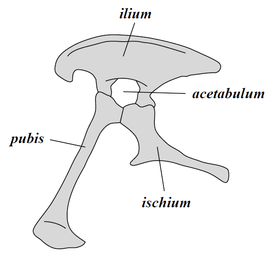
Stegosaurus (Roof Lizard or Covered Lizard): A large, Ornithischian (Bird-Hipped), dinosaur that lived in North America and Europe during the late Jurassic period (155 to 150 million years ago). Ornithschia referring to the hip structure found in certain dinosaurs and modern day birds, which is a three pronged structure where the Pubis runs backwards, parallel to the Ischium. The Stegosaurus was a quadrupedal Ornithopod, meaning it walked on all fours and had 3 digit hindfeet and 5 digit forefeet. The Stegosaurus is most easily identified by its distinctive double row of kite-shaed plates rising vertically along its rounded back. The Stegosaurus had short forelimbs and a head so small it is belived to have had the smallest brain of all dinosaurs. The average size of a Stegosaurus was about 30ft long and 13ft tall.
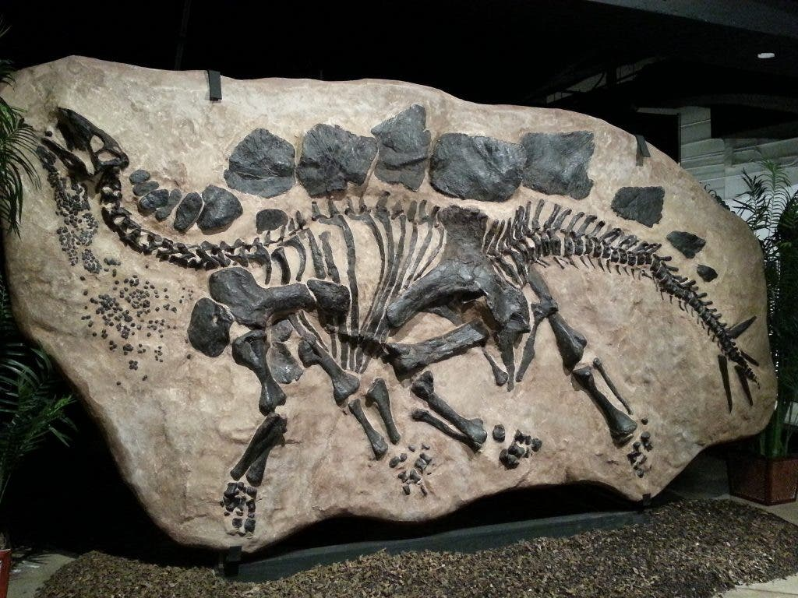 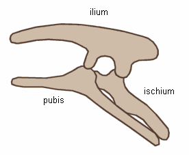
Birds:
Archaeopterx (Original Bird or First Bird): The oldest known bird, it lived during the late Jurassic period (150 million years ago) and was the transitional period between feathered dinosaurs and modern birds. The Archaeopterx was roughly the size of a Raven and had sharp teeth, long claws, and a tail as long as its body.
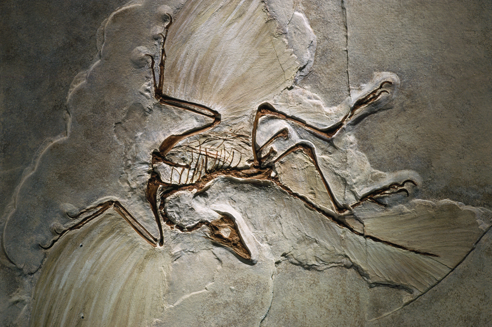
Titanis (Terror Bird): An 8ft tall, flightless, carnivorous bird that lived in North America during the Pliocene period (5.4 million years ago). Though no Titanis skulls have ever been discovered, due to the powerful bones in the creatures neck, it believed that it used its head and beack to pummel its prey to death.
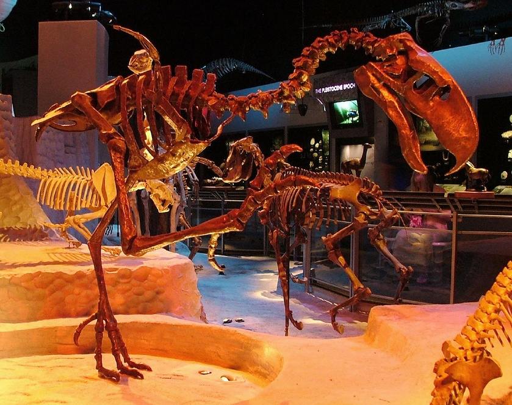
Synapsids:
Dimetrodon: A genus of synapsid (mammal like reptiles) that lived during the early Permian period (295 to 272 million years ago). It was quadropedal and had elongated spines extending from its vertebrae. Dimetrodon fossils have been found in both America and Germany and can range in size from 6 to 15 ft long.
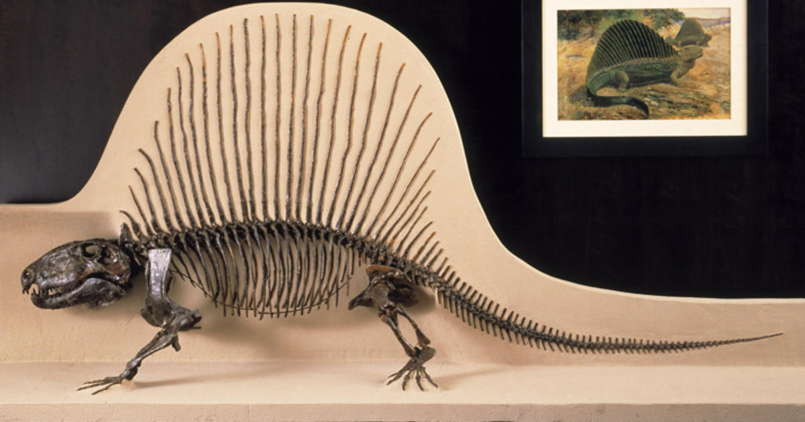
Mammals:
Equus: Modern horses, they are believed to have evolved from Dinohippus, via the intermediate form Plesippus. One of the oldest species is Equus Simplicidens, which had Zebra like bodies and Donkey like skulls. The oldest Equine fossil to date is ruffly 3.5 million years old, meaning it is from the Pliocene period.
Homosapiens (Wise Man): The only extant (still living) human species. The divergence of lineage that led to the creation of Homosapiens from out ancester the Homoerectus is belived to have occured in Africa nearly 500,000 years ago, with the earliest evidence of Homosapiens being from Africa 300,000 years ago. Homosapiens have larger forebrains than older species of humans, resulting in our brain being position above our eyes rather than behind them. This is the reason why homosapiens have steep foreheads rather than sloping ones like our predecessors.
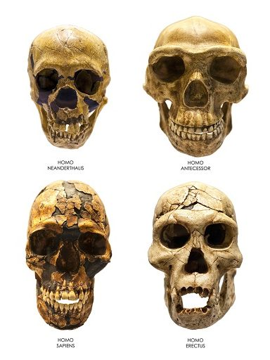
Mammuthus (Mammoth): Commonly equipped with long, curved tusks, and in northern species, long hair. Mammoths lived from the Pliocene epoch (5 million years ago) to the Holocene (4,500 years ago) in Africa, Europe, Asia, and North America. Mammoths were approsimately 13ft tall and weighed about 9 tons.


 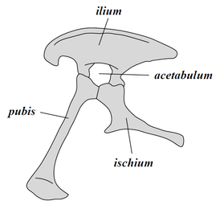
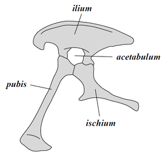